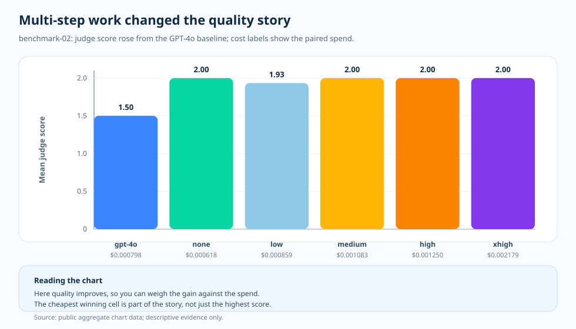

विषय-लेख · benchmark-02 multi-step काम
Multi-step काम: जब रीज़निंग आज़माने का दाम कमाती है
छोटे तथ्यात्मक स्लाइस के बाद मन करता है कि reasoning effort को "छिपा ख़र्च" मान लिया जाए — एक डायल जो जवाब बदले बिना सिर्फ़ बिल फुलाता है। पर टीमें ऐसे काम भी चलाती हैं जहाँ जवाब इस पर टिका होता है कि कई शर्तें एक साथ दिमाग़ में बनी रहें। वहाँ सवाल फिर खुल जाता है: क्या ज़्यादा मज़बूत मॉडल या ज़्यादा reasoning effort सिर्फ़ लागत नहीं, बल्कि जवाब बदलती है? यह बेंचमार्क उसी अंदाज़े को जाँच पर रखता है।
हमने यह क्यों जाँचा
छोटे तथ्यात्मक स्लाइस ने एक सबक़ सिखाया: जब काम सिर्फ़ याद-दिलाना माँगता है, तो अतिरिक्त रीज़निंग ज़्यादातर लागत ख़रीदती है। पर हर काम याद-दिलाना नहीं होता। असल काम का बड़ा हिस्सा मॉडल से माँगता है कि छोटी शर्तों की शृंखला ज़िंदा रहे — कुछ शर्तें जोड़ो, बीच के नतीजे ढोओ, फिर जवाब दो। उस आकार में "और सोचने दो" साफ़ बर्बादी नहीं दिखती, बल्कि वसूल होने लायक़ लगने लगती है।
इससे जाँचने योग्य एक साफ़ परिकल्पना मिलती है। अगर काम सचमुच कई शर्तें एक साथ बनाए रखना माँगता है, तो ज़्यादा मज़बूत मॉडल या ज़्यादा reasoning effort सिर्फ़ बड़ा बिल नहीं, बल्कि असली गुणवत्ता ख़रीद सकती है। अंदाज़ा तर्कसंगत है — प्रयोग जाँचता है कि यह अमूर्त बात नहीं, बल्कि मापे गए स्लाइस पर भी टिकती है या नहीं।
इसलिए हमने जाँचा। benchmark-02 multi-step स्लाइस को स्थिर रखता है, वही मॉडल और effort का सोपान चलता है — GPT-4o baseline, फिर GPT-5.2 का none, low, medium, high, extra-high — और हर सेल में लागत व latency के बग़ल में औसत judge स्कोर पढ़ता है। नतीजे मिले-जुले हैं और इन्हें सीधे कहना चाहिए। GPT-5.2 ने GPT-4o baseline से ऊपर गुणवत्ता उठाई, पर GPT-5.2 के भीतर सबसे ऊँचा effort अपने-आप विजेता नहीं था, और सबसे सस्ती सर्वोच्च-स्कोर सेल ने एक भी reasoning token नहीं ख़र्च किया। नीचे का एक-पृष्ठ सार इसे एक फ़्रेम में कह देता है, और आगे के खंड मापा विवरण देते हैं।

प्रश्न
अतिरिक्त रीज़निंग कब सिर्फ़ बिल नहीं फुलाती, बल्कि गुणवत्ता-सुधार ख़रीदती है?
सबूत
benchmark-02 के गुणवत्ता, लागत, latency और टोकन-आकार चार्ट।
नतीजा
GPT-5.2 का low/none क्षेत्र, सबसे ऊँचे effort के बिना भी, GPT-4o baseline पर दिखने लायक़ गुणवत्ता-लाभ दे गया।
निर्णय
multi-step स्लाइस को गुणवत्ता-मानक पार करने वाले सबसे नीचे effort पर भेजें, और effort तभी बढ़ाएँ जब साथ वाला गुणवत्ता-चार्ट हिले।

गुणवत्ता की हलचल ने व्याख्या बदली
benchmark-02 में baseline GPT-4o सेल का judge स्कोर औसतन 1.5 था। GPT-5.2 ने none, medium, high, extra-high effort पर 2.0 छुआ और low effort पर 1.93 तक पहुँचा। चार्ट यह नहीं कह रहा कि "हमेशा effort बढ़ाओ"। यह कह रहा है कि इस वर्कलोड में इतनी संरचना है कि मॉडल और effort का चुनाव आज़माने लायक़ है।
ज़्यादा अहम पठन पहली सफल सेल के आकार में है। GPT-5.2 none ने प्रति-request औसत $0.000618 पर 2.0 छुआ। इससे सबसे ऊँचे effort को डिफ़ॉल्ट बनाए बिना, आज़माना अपने-आप उपयोगी हो जाता है।
चार्ट कैसे पढ़ें
X-अक्ष मॉडल/effort सेल है, Y-अक्ष औसत judge स्कोर। हर बार के नीचे का लेबल उसी सेल की प्रति-request औसत लागत है। यह जोड़ी से देखना इसलिए ज़रूरी है क्योंकि सिर्फ़ गुणवत्ता-बार देखना ज़रूरत से ज़्यादा चुनाव की ओर खींच सकता है। अगर कई सेलें रूब्रिक के शीर्ष पर पहुँचती हैं, तो जो सस्ती और तेज़ है वही दिलचस्प हो जाती है।
यह फ़्रीक्वेंसी हिस्टोग्राम नहीं है। हर बार एक सारांशित प्रयोग-सेल है, जिसकी मूल तालिका में अपनी नमूना-गिनती और मानक विचलन हैं।
यह बेंचमार्क अलग क्यों था
छोटे तथ्यात्मक काम ने ज़्यादातर छोटे जवाब माँगे। multi-step काम ने मॉडल से माँगा कि छोटी रीज़निंग-शृंखला बनी रहे। इसने वह बदल दिया जो "अतिरिक्त सोच" से ख़रीदा जा सकता है। मॉडल और effort का चुनाव अब सिर्फ़ अतिरिक्त ख़र्च के बदले नहीं, बल्कि कम ग़लत जवाबों के बदले पढ़ा जाने लगा।
फिर भी सबूत अधिकतमवाद को इनाम नहीं देता। effort बढ़ने पर latency भी बढ़ती है, और extra-high effort औसतन 3.3s था। गुणवत्ता एक बार रूब्रिक के शीर्ष पर पहुँच जाए, तो अगला सवाल यह बनता है कि "क्या धीमी सेल कुछ नया बता रही है"।
याद रखने योग्य बिंदु
रीज़निंग तब वसूल होती है जब वह जवाब बदलती है, जवाब का अंदाज़ नहीं। आज़माना सबसे पहले multi-step काम का हक़ है। काम में इतनी आंतरिक संरचना है कि मॉडल को लाभ मिलता है और मूल्यांकक वह अंतर पकड़ लेता है।
इसलिए निर्णय "हर जगह और रीज़निंग करो" नहीं है। यह है: "multi-step स्लाइस को गुणवत्ता-मानक पार करने वाले सबसे नीचे effort स्तर पर भेजो।"
सबूत की तालिका
docs/blog/data/chart-data/cost-curves-effort/benchmark-02/quality.json
से आते हैं; एविडेंस डैशबोर्ड
(परोसा गया चार्ट-डेटा) में
लागत-चार्ट के साथ जोड़ी बनाकर पढ़ें।

| सबूत-पंक्ति | मीट्रिक A | मीट्रिक B | क्या जुड़ता है |
|---|---|---|---|
| GPT-4o baseline | judge स्कोर 1.50 | $0.000798/request | पार करने योग्य स्पष्ट baseline। |
| GPT-5.2 none | judge स्कोर 2.00 | $0.000618/request | इस सार्वजनिक स्लाइस की सबसे सस्ती सर्वोच्च-स्कोर सेल। |
| GPT-5.2 low | judge स्कोर 1.93 | $0.000859/request | baseline से ऊपर, पर यहाँ स्पष्ट विजेता नहीं। |
| GPT-5.2 extra-high | judge स्कोर 2.00 | $0.002179/request | सर्वोच्च स्कोर, पर बिल बड़ा और latency लंबी। |
स्रोत और सबूत-सीमा
ऊपर का हर मान इस रिपॉज़िटरी की किसी सार्वजनिक कलाकृति तक जाता है, और हर लागत-दावा एक दिनांकित मूल्य-स्नैपशॉट पर गणित है। गुणवत्ता-मानक छूने वाले सबसे नीचे effort पर रुकने की इस लेख की रूटिंग-आदत इसकी अपनी संचालन-व्याख्या है। नीचे की दो श्रेणियाँ बताती हैं कि प्रलेखित इनपुट कहाँ ख़त्म होता है और अनुमान कहाँ शुरू।
- [1] Tier 1 — कार्यप्रणाली अनुबंध: यह रिपॉज़िटरी,
docs/05-methodology.md(v1.0)। प्रति सेल N = 20 लिखित नमूने, R = 3 दोहराव, केवल सार्वजनिक समुच्चय स्लाइस। चार्ट-पठन का गद्य इसी स्थिर रुख़ को मानता है; त्रुटि-बार मानक विचलन हैं, और N = 20 पर p-मान का दावा नहीं। - [2] Tier 1 — PAYG मूल्य स्नैपशॉट: प्रति-request लागत इस रिपॉज़िटरी की
pricing/azure-openai-payg-2026-05.yamlपर गणित है — यह Azure OpenAI के आधिकारिक सार्वजनिक मूल्य-पृष्ठ का 2026-05-19 को लिया गया फ़्रोज़न स्नैपशॉट है। सूची-मूल्य हिलने पर लागत-संख्याएँ भी बदलेंगी। - [3] Tier 2 — benchmark-02 स्लाइस मापन: यह रिपॉज़िटरी,
benchmarks/02-multi-step-reasoning/analysis.json। effort-दर-effort गुणवत्ता-मान — 1.5 GPT-4o baseline, GPT-5.2 के none/medium/high/extra-high पर 2.0, GPT-5.2 low पर 1.93, और बिना reasoning token के प्रति-request $0.000618 पर सबसे सस्ती सर्वोच्च-स्कोर सेल GPT-5.2 none — और प्रति-request $0.000618 से $0.002179 तक संगत लागत-मानों का स्रोत। - [4] Tier 2 — रेंडर किया चार्ट-डेटा: यह रिपॉज़िटरी,
docs/blog/data/chart-data/cost-curves-effort/benchmark-02/cost-per-request.json,quality.json,latency.json। इन्हेंdocs/blog/data/chart-data/token-composition/benchmark-02/tokens.jsonके साथ पढ़ने पर सबूत बनता है कि इस स्लाइस का गुणवत्ता-लाभ सिर्फ़ ऊँचे बिल के साथ नहीं, बल्कि जायज़ बिल के साथ आया। - [5] एविडेंस डैशबोर्ड: रेंडर हुआ benchmark-02 गुणवत्ता–लागत जोड़ी चार्ट उन्हीं कलाकृतियों का ऑडिट-योग्य रूप है।
यह स्लाइस क्या सिद्ध करती है और क्या नहीं: इस multi-step स्लाइस में GPT-5.2 ने GPT-4o baseline पर मापने-योग्य गुणवत्ता-लाभ दिया, यह दिखाती है। यह सिद्ध नहीं करती कि ऊँचा reasoning effort हमेशा गुणवत्ता बढ़ाता है या अतिरिक्त बिल जायज़ ठहराता है — यहाँ सबसे सस्ती सर्वोच्च-स्कोर सेल ने एक भी reasoning token नहीं ख़र्च किया — और न ही कि वही लाभ छोटे तथ्यात्मक, टूल-एजेंट या इंटीग्रेशन काम में दिखेगा। हर विषय का अपना मापन है।
इस सबूत से क्या कहा जा सकता है
इस स्लाइस में multi-step काम ने GPT-4o baseline के 1.5 से GPT-5.2 के 2.0 तक मापने-योग्य गुणवत्ता-लाभ दिखाया, और वह लाभ effort-सोपान से नहीं, मॉडल-अपग्रेड से आया। यह सीरीज़ में यह आधार-बिंदु जोड़ता है कि "रीज़निंग तभी वसूल होती है जब जवाब सचमुच बदले"।
व्यावहारिक नियम
- उसी multi-step सेल के गुणवत्ता-चार्ट को लागत-चार्ट से जोड़ी बनाकर पढ़ें। सिर्फ़ गुणवत्ता-बार न देखें।
- गुणवत्ता-मानक पार करने वाली सबसे नीचे effort सेल चुनें। ऊँची सेलों को तभी उम्मीदवार मानें जब स्कोर हिले।
- ऊँचे effort तक बढ़ाने से पहले latency जाँचें। effort बढ़ने पर प्रतीक्षा भी बढ़ती है।
- वर्कलोड-आकार बदलने पर दोबारा मापें। इस स्लाइस का लाभ दूसरे विषयों तक नहीं जाता।
व्यावहारिक नियम: multi-step काम में पहले गुणवत्ता-मानक पार करने वाली सबसे नीचे मॉडल/effort सेल चुनें, और reasoning effort तभी बढ़ाएँ जब इस वर्कलोड-आकार पर साथ वाला गुणवत्ता-चार्ट हिले। बिल को जायज़ गुणवत्ता-लाभ ठहराता है, ख़र्च अपने-आप नहीं।
आगे: टूल-एजेंट: गुणवत्ता शीर्ष छूने के बाद बोलना latency शुरू करती है — टूल-इस्तेमाल वाले काम में अतिरिक्त रीज़निंग जब सीलिंग से टकराती है, तो चार्ट पहले क्या दिखाता है?